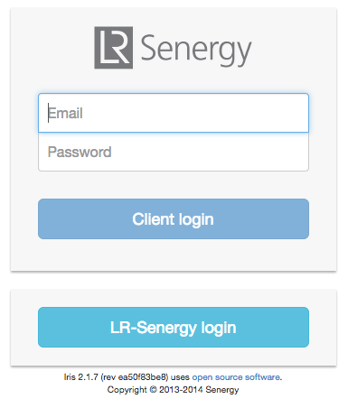
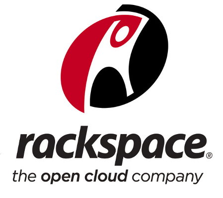
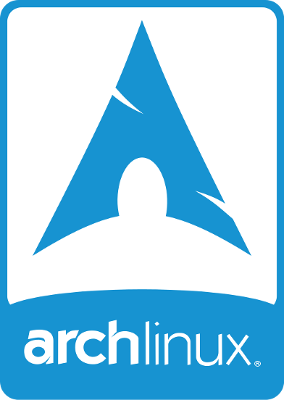
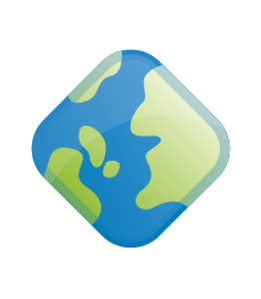
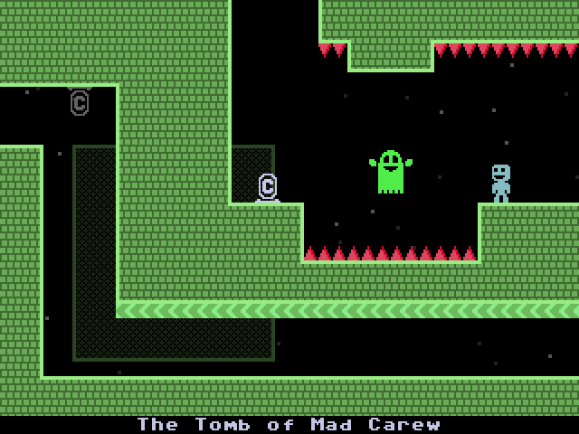

Greetings
"A dive into the hybrid geospatial stack"
aboutSam Franklin
GIS Manager @

@samfranklin
sam.franklin@lr-senergy.com
Why
am I
here ?
"why did you decide that"
"what components did you use"
act1-what we did first
act2-what we're doing now
act3-what worked/ what failed / what's next
hybrid
FOSS=licencing
yeah...
no SQL database...
and
no webmap...
the gauntlet was thrown down
4 week
deadline !!!
limited options due to time-pressure and needed customisation
open source gives you access to the ingredients
the wall of terror!
mentoring from

and
print "hello world"
"If you are not embarrassed by the first version of your product, you've launched too late."
-- Reid Hoffman
Minimal Viable Product
2 years
version 2.2.0 of Iris

servers
 + 
server apps

+  Geoserver
client side frameworks are OpenLayers2 for spatial and JQuery/Bootstrap for a responsive UI
cute story GIS guy..
how does this help me again?
custom dashboards via HighchartsJS
custom transit control
multi-source realtime vessel tracking with history
too many hyperlinks = File Explorer UI
3rd-party base-mapping from Findmaps // SeaZone // Esri // Google // BGS // OpenWeatherMap
but...
we needed a custom-rolled TMS for marine infrastructure and licencing
...using
tilemill //
mapnik //
mapproxy
= sweet !
Wait.
CAD?
Tile it !
Web Mercator = distortion!
knowledge management
applied to projects
applied to surveys
..and I want to use ArcGIS Desktop.
create a connection
load your data!
enterprise postgreSQL
1-master
2-slaves
and replicate
shell-based database loading with
WFS+
ogr2ogr or
wget+
7zip+
pgsql2shp= easy life
shell-based
survey dtm
processing
chain
QPS Fledermaus
FMCommand [XYZ-->SD-->ASC]
..then GDAL programs
arcpy SSDM validation
automated schema checks = [names, headers, datatypes, CRS, geometry, styling]
manual checks = [content against CAD deliverables]
Esri=
MapProduction
ArcMap -->SVG--> Inkscape
3D Analyst driven ground model development

pitfalls
"hey buddy
...gotta nail?"
git!? push!? pull!?
...WTF?
almost done...
and finally...
act1 = agile
act2 = hybrid solutions in action
act 3 = avoid pitfalls by adopting process
"Do what you can, with what you have, where you are"
Theodore Roosevelt